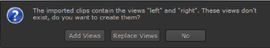
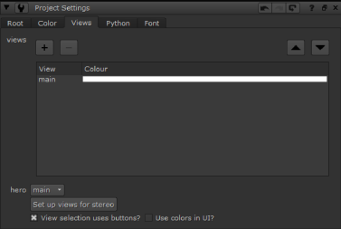
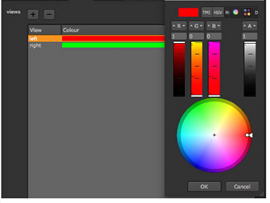
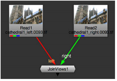
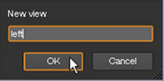
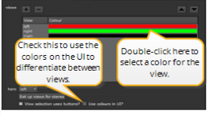
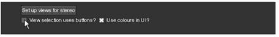

You can import your footage and let Nuke create the views automatically or set up views in advance in the project settings. This allows you to process the individual views separately or both views together, and see the effect of your changes on each view.
If you are likely to need the same views in several projects, you may want to save the views you created in a template.nk script file. For more information on how to do this, see Template Scripts.
NOTE: Automatic view creation is not implemented for multi-view .mov files. See Creating and Managing Views Manually for information on how to create the views.
| 1. | Read in your multi-view files as normal. |
The Create missing views? dialog displays.

| 2. | Click Add Views, Replace Views, or No: |
• Add Views - add the views in the incoming clip to those that exist in the project.
• Replace Views - replace all existing project views with those in the incoming clip.
• No - import the clip and display only the first view in the file, retaining any existing views in the project.
You can now access the views in your project from the view dropdown menu of certain nodes’ controls. You’ll also notice that each view has its own button in the Viewer controls.
| 1. | Select Edit > Project Settings. |
| 2. | Go to the Views tab. The available views are listed in the views field. |

| 3. | If you want to remove the view called main and add views called left and right, click the Set up views for stereo button. The two views are assigned colors. To change the colors, double-click on the color field and select another color from the color picker that opens. |

If you check Use colors in UI?, these colors are used in Node Graph connections, split views indicators on nodes, and Viewer and ShuffleViews node controls to make it easier to differentiate between views.

| 4. | If you want to add other new views, click the + button. |
| 5. | In the dialog that opens, enter a name for the view, for example main. Click OK. |

| 6. | Repeat steps 4 and 5 as necessary until you’ve got the views you want. You can assign colors to all views by double-clicking the area on the right of the view name. |

| 7. | To delete an unnecessary view, select the view from the list and click the delete button. Note that deleting a view does not remove references to it from the script, and any nodes that refer to the deleted view produces an error. |
| 8. | To move a view around in the list of views, click the up and down arrows above the views panel. |
| 9. | To select the view that’s displayed whenever you load the project, set the hero dropdown to the appropriate view. |
You can now access the views in your project from the view dropdown menu of certain nodes’ controls. You’ll also notice that each view has its own button in the Viewer controls.
If you created many views, you may want them to appear in a dropdown menu rather than as separate buttons in the Viewer and node controls. To switch to using dropdown menus, uncheck View selection uses buttons? on the Views tab of the Project Settings properties panel.
|
 |
| Setting the way views are selected in the Viewer. |
|
|